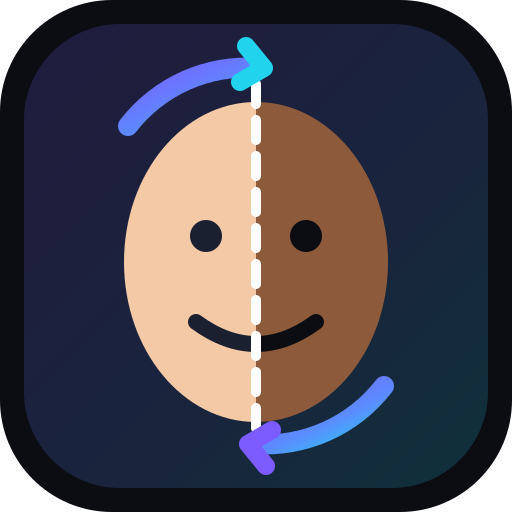

Chỉ dùng ảnh của bạn hoặc người đã đồng ý. Không dùng để giả mạo, lừa đảo hay làm nội dung người lớn.
Ứng dụng tự chọn khuôn mặt lớn nhất. Ảnh có nhiều người? Chạm vào khuôn mặt bạn muốn.
Mặc định mọi thứ tự động. Chỉ chỉnh nếu muốn thử.
Trên iPhone: nhấn “Lưu ảnh” rồi chọn “Lưu hình ảnh”. Nếu không thấy, nhấn giữ vào ảnh để lưu.
Nhấn giữ vào ảnh rồi chọn “Lưu vào Ảnh”.